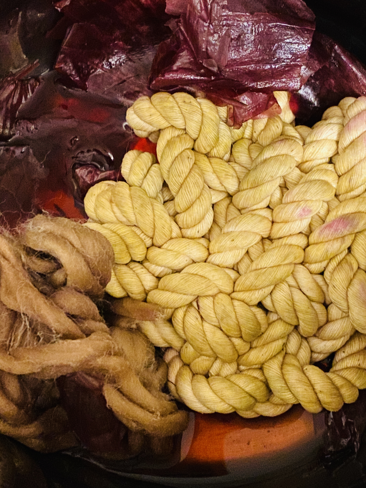
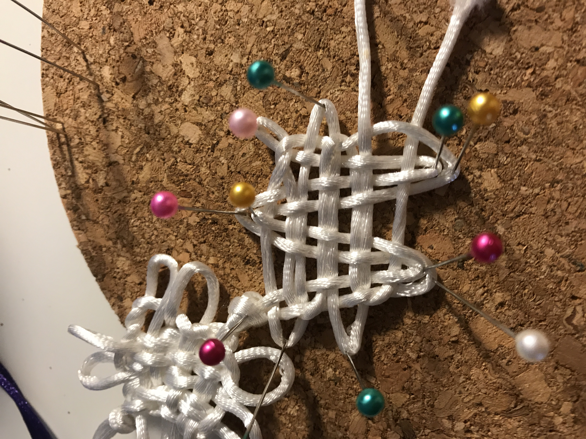
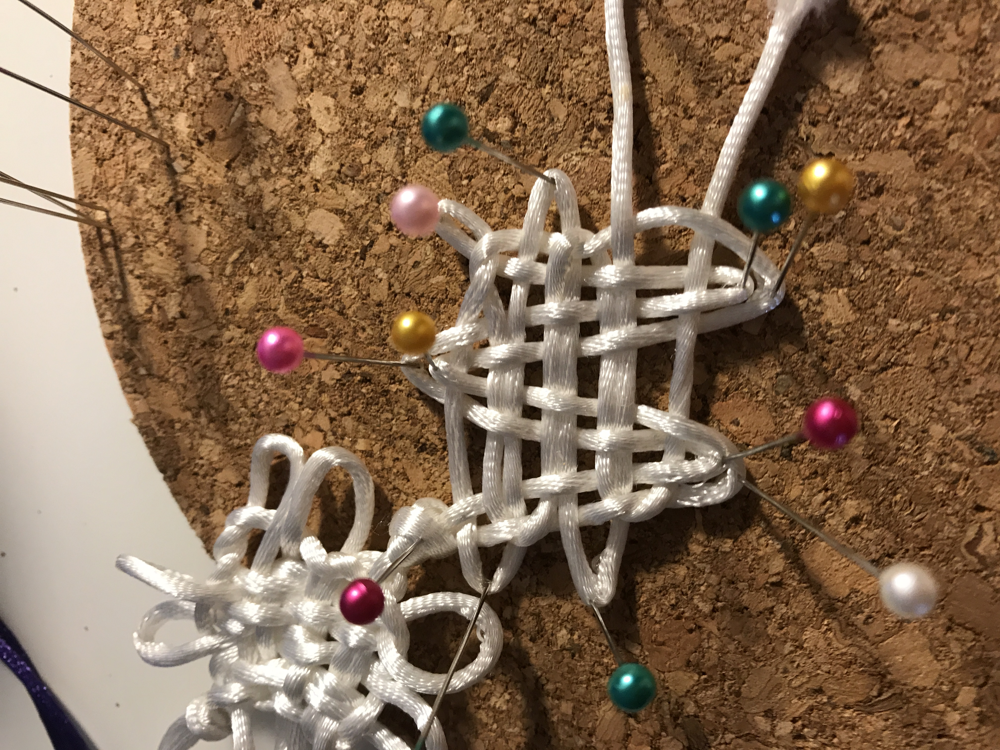
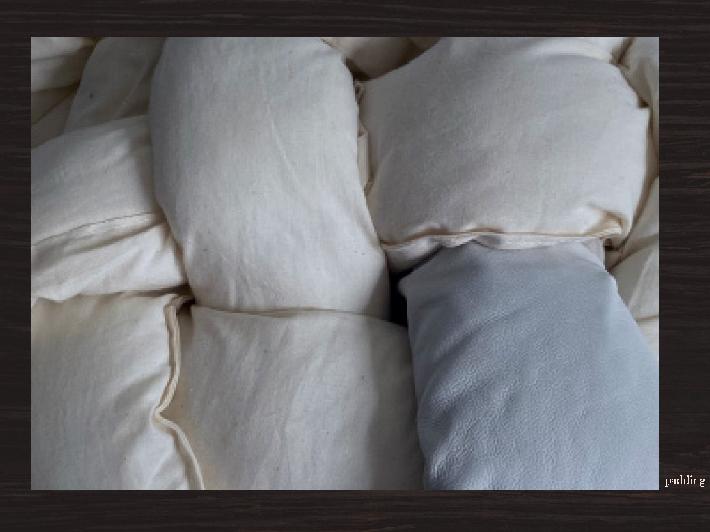
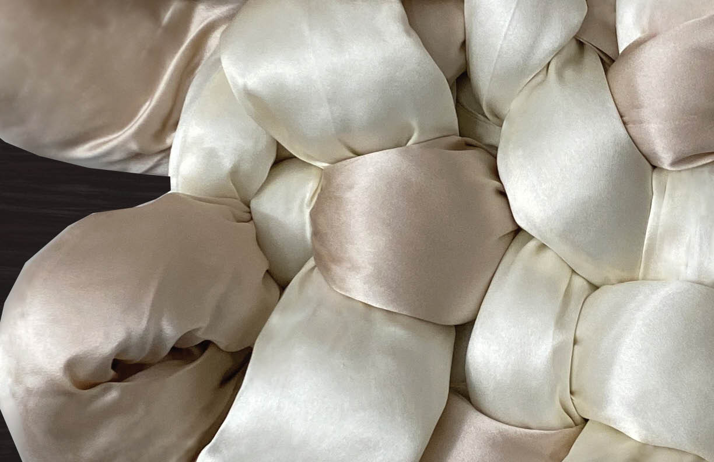
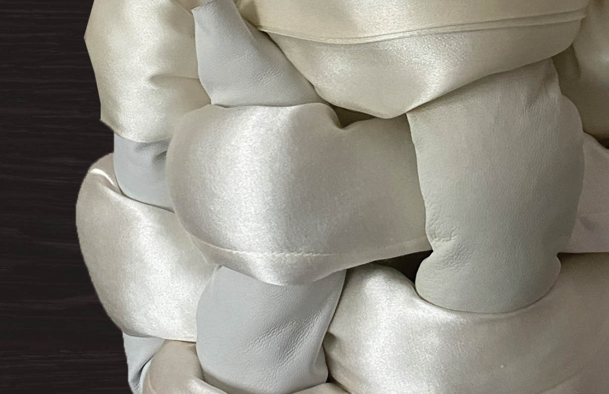
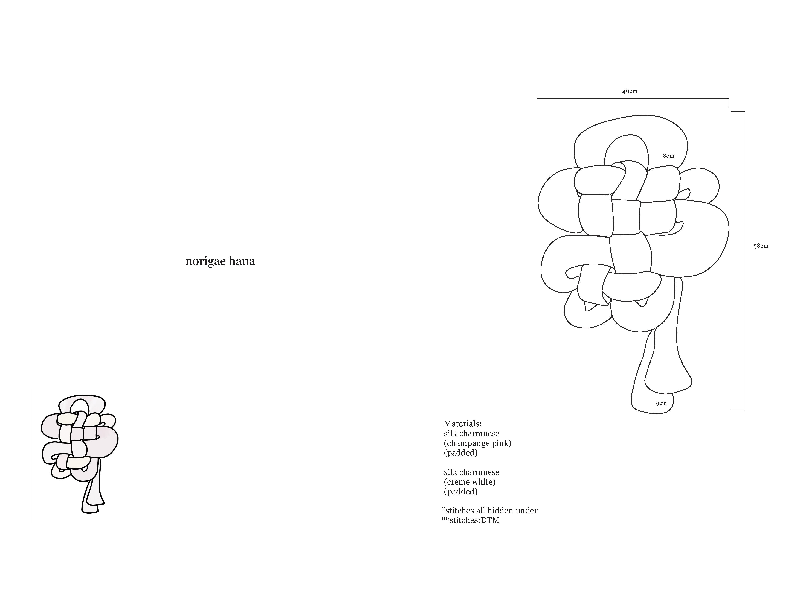
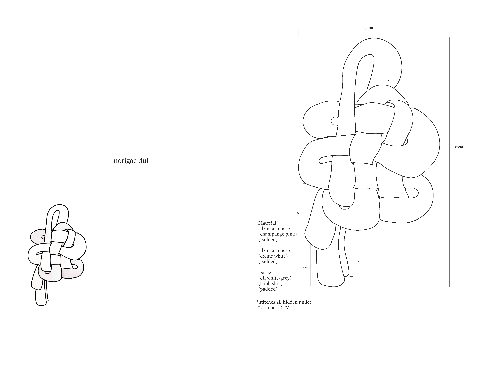

02 thesis : home
handbag & footwear collection
This project is my BFA Fashion Design senior thesis project presented in April 2020. It is composed of a collection of handbags and shoes. Each component showcases my Korean heritage under the theme of 'home'. Through various materials and methods I was able to explore topics like tradition, culture and art.

Process
knotting & dyeing
 

materiality
  spec sheets
 